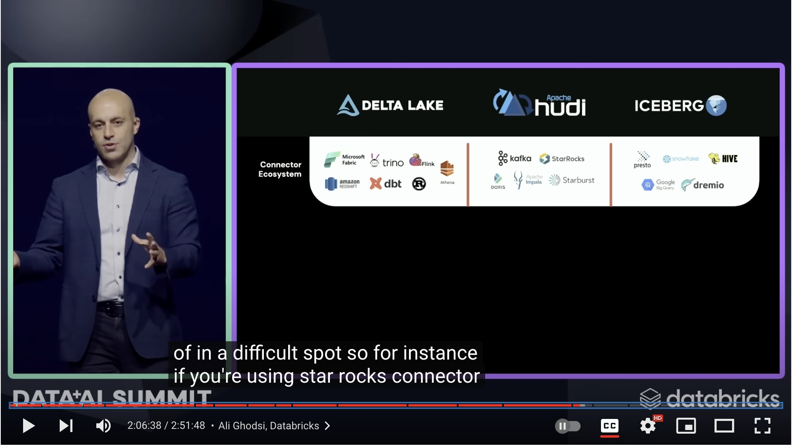
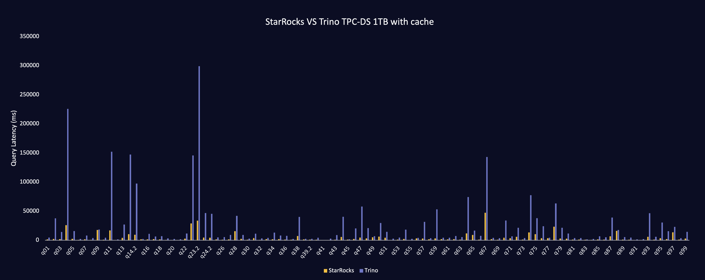
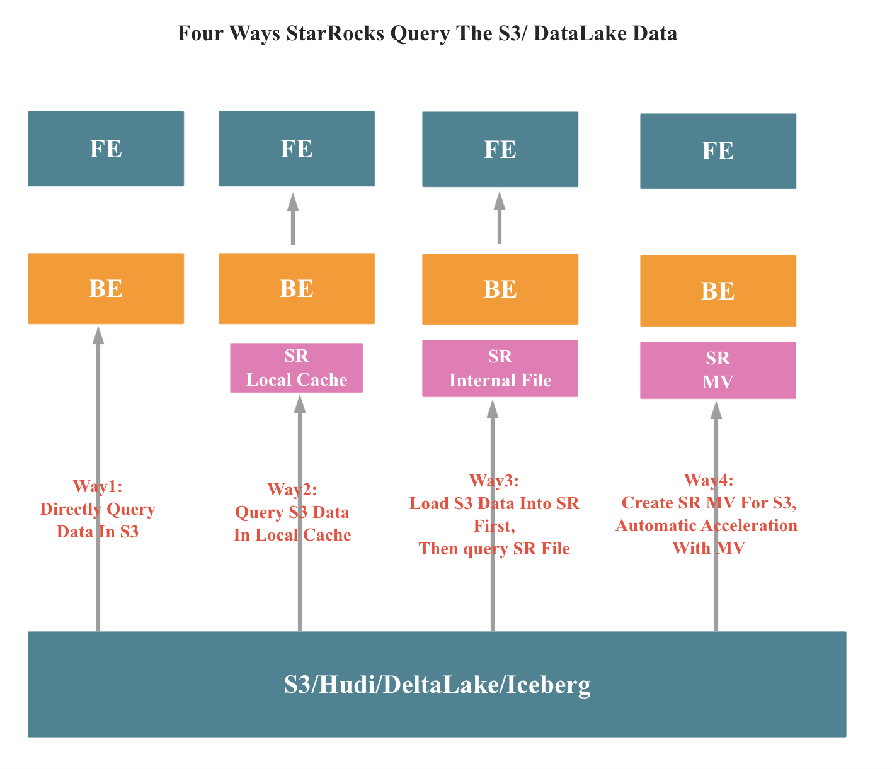
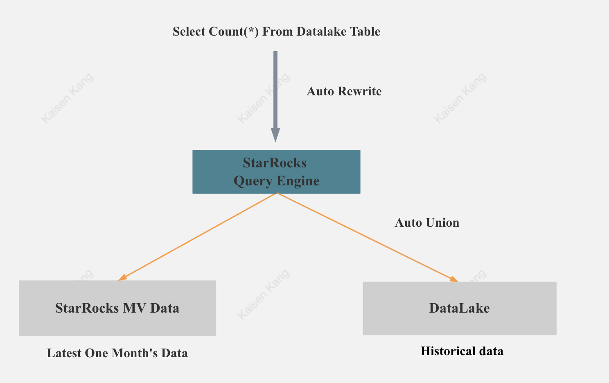
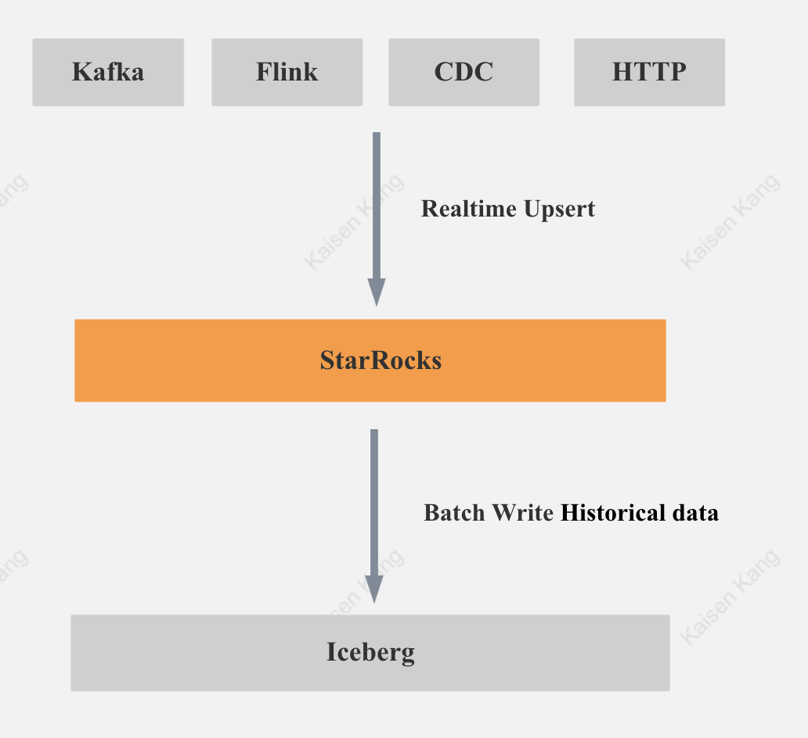
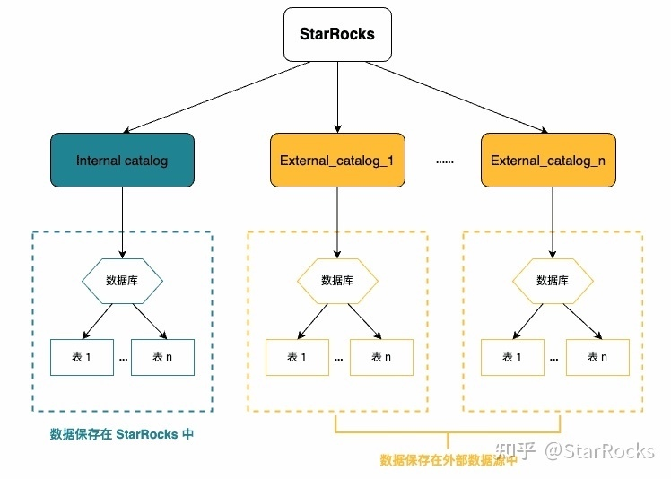
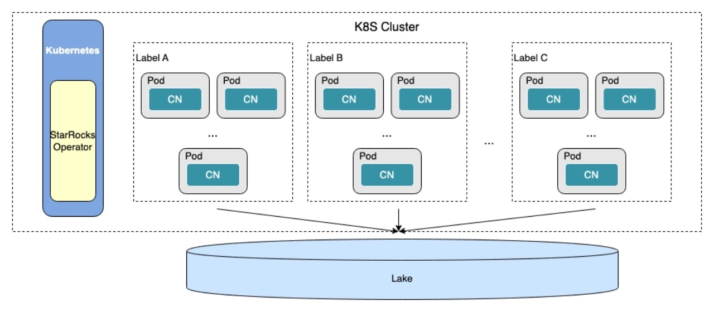

被 DataBricks CEO 唯一提及的数据库：StarRocks
作者: 康凯森
日期: 2023-06-30
分类: OLAP
- DataBricks CEO Only Mentioned StarRocks
- DataBricks CEO Is Wrong!
- StarRocks Powerful DateLake Analysis
DataBricks CEO Only Mentioned StarRocks

在刚刚结束的 DataBricks Data + AI Summit 上，StarRocks 是 DataBricks CEO 在演讲中唯一提及的 DataBase, why?
你可以猜一猜。。。
数据湖的元数据层统一是大势所趋，Delta Lake 3.0 和 Onetable 做的事情一样，都想统一数据湖的元数据层。 Onetable 的介绍可以参考 onetable-hudi-delta-iceberg
DataBricks CEO Is Wrong!
DataBricks CEO 说 StarRocks 只能查询 Hudi, 不能查询 Delta Lake 和 IceBerg。事实上，StarRocks 可以同时查询 Hudi, Delta Lake 和 IceBerg，StarRocks 不仅可以查询，而且可以提供最极致的数据湖分析体验，而且绝对 Open，不会 Lock。
无论数据湖上各种 Table Format 的元数据是否统一，你都可以使用 StarRocks 作为你数据湖上的查询引擎。 Because StarRocks Is Very Powerful! Why?
StarRocks Powerful DateLake Analysis
StarRocks 极致查询性能

关于 StarRocks 的极致性能已经有很多资料介绍了，这里就不赘述了
- MPP 分布式执行
- Pipeline 并行执行框架
- 向量化执行
- CBO 优化器
- Global Runtime Filter
- Metadata Cache
- Local Data Cache
- Materialized View
利用 StarRocks 的 House 能力进一步提升性能
StarRocks 不仅仅是一个查询引擎，同时也拥有一个强大的存储引擎，如果你希望进一步提升查询性能或者查询并发能力，你可以将数据导入到 StarRocks 中，StarRocks的本地存储会拥有丰富的索引能力，实时更新能力，多表 Colocate 能力。
数据导入 StarRocks 中有两种方式：手动导入数据和 MV 自动导入数据。
StarRocks 支持对数据湖上的表创建物化视图，并且支持自动数据同步，自动查询改写

StarRocks 冷热分离 + 自动查询改写
大多数情况下，我们希望最近一周或者一个月的热数据拥有更好的查询性能，在 StarRocks 中，MV 可以很方便很高效的帮你实现这一点：

如上图所示，StarRocks 的 MV 可以只保存最近一个月的数据，当你查询 DataLake 上的数据时，StarRocks 会帮你自动改写，最新的数据从 StarRocks 查询，历史数据从 DataLake 查询，然后自动 Union。
StarRocks 是支持实时更新的 LakeHouse

因为 StarRocks 同时支持实时高效更新和写出到 Iceberg，所以我们可以基于 StarRocks 构建实时更新的 LakeHouse。 当你同时需要实时更新，极致查询性能，开放的 Table Format，StarRocks 便是你的唯一选择。
StarRocks 简单易用的 Catalog 元数据管理
StarRocks 可以将外部 DB 下的所有表元数据可以一键同步，快速同步各种 DateLake 数据源

StarRocks 弹性伸缩
StarRocks 用于数据湖分析的计算节点是无状态的，可以结合 K8S 进行快速弹性伸缩

《OLAP 性能优化指南》欢迎 Star&共建
欢迎关注微信公众号